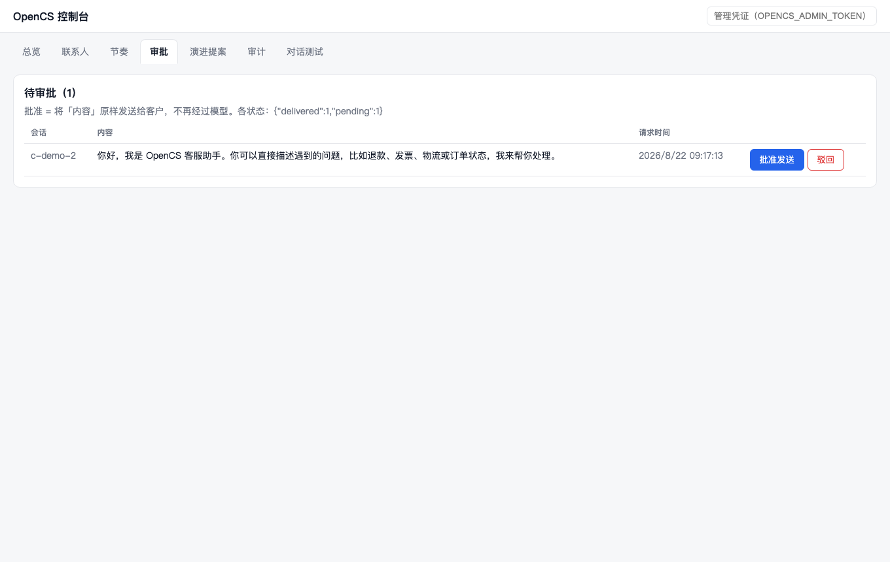
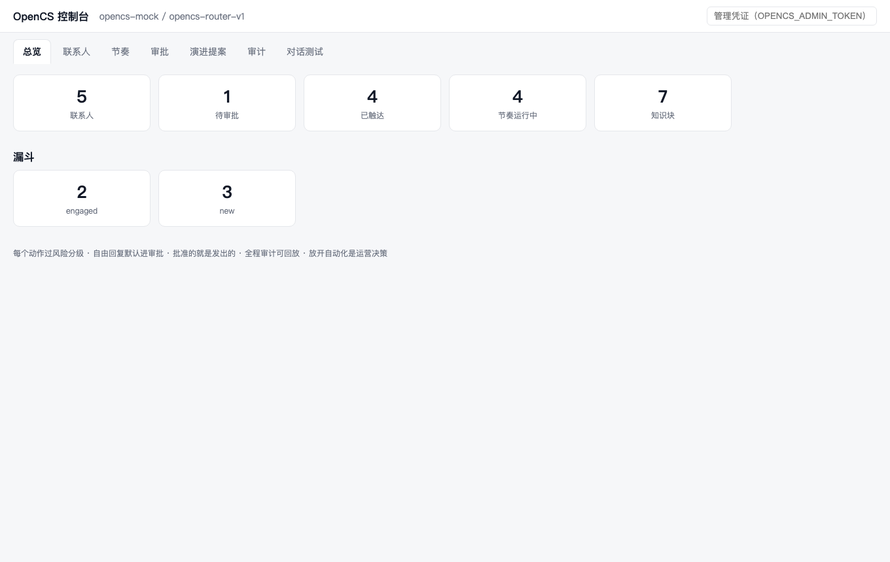
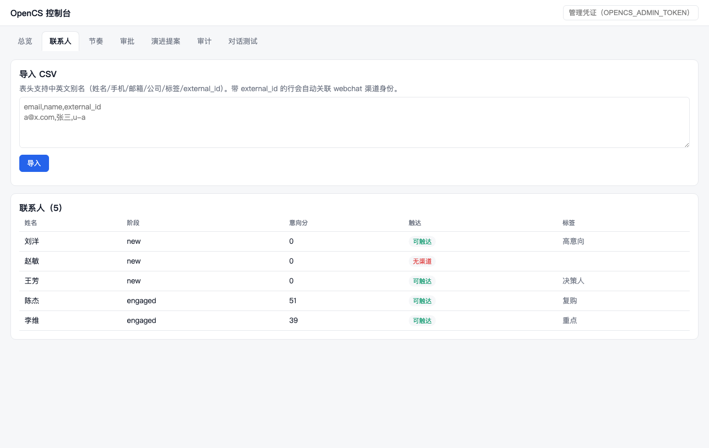
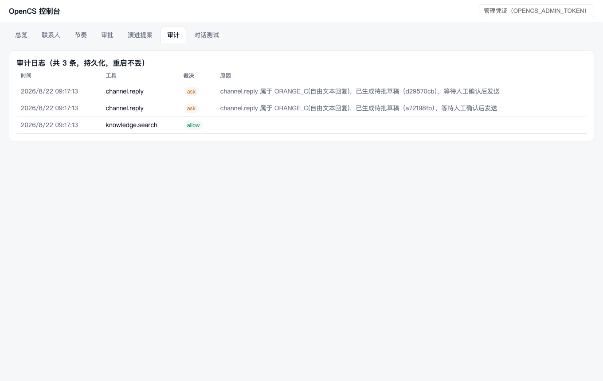

导入名单自动触达、客户一回复即停；Agent 的每个动作都过风险分级， 自由回复默认进人工审批——批准的就是发出的，全程审计可回放。 不按坐席收费，放开自动化是你的决策，而不是我们的默认值。
管理控制台随服务分发，单文件零构建——总览 / 联系人 / 节奏 / 审批 / 演进提案 / 审计 / 对话测试




客服接得住，增长跑得动，全程管得住
网页聊天（HTTP + WebSocket 实时流）与企业微信客服（签名校验 + 加解密），重连历史与实时逐帧一致。
FTS5 全文检索，运营改文件保存即生效，答案标注来源，不需要「训练」。
CSV 导入、渠道身份关联防重复建档、生命周期阶段、意向评分、规则分群。
模板批量首触毫秒级零模型成本，LLM 个性化跟进；静默时段 / 周频控 / 客户一回复即退出。
自由回复默认进队列，运营看到的是将发送的原文，批准后系统确定性投递。
每轮回复零成本自动评测，低分沉淀证据，Agent 自提改进提案，改行为准则永远要人点头。
写进架构，不是宣传语——每一条都有自动化测试守护（472 项）
发消息、改生命周期、写标签全部经工具层收口，guard 链做租户隔离 + 风险分级 + 频控。未登记的新工具默认收紧而非放行。
审批通过的原文由系统确定性投递，不再经过模型——不存在「审批之后 AI 又改了措辞」。
进过模型的内容都能从会话日志重建，回放不是「大概如此」而是逐帧一致。
| 风险档 | 默认策略 | 典型动作 |
|---|---|---|
| GREEN / YELLOW | 放行 | 查知识库、读订单、加备注 |
| ORANGE A/B | 放行（频控 + 审计） | 发模板消息、节奏投递 |
| ORANGE_C / RED | 人工确认 | 自由文本回复、改生命周期、标记成单 |
自托管软件：无回传通道、无遥测。唯一出境路径是模型调用，且可以掐断
联系人、会话、审计、知识库全部是你服务器上的 SQLite 文件，备份就是拷文件（附一致性备份脚本）。
DeepSeek 官方 API（性价比）/ 任意 OpenAI 兼容端点 / 自建 vLLM·Ollama——最后一种全量数据不出机房。
缺少安全配置或将降级为 mock 模型时，进程直接拒绝启动，不静默运行。
无需任何 API key 即可离线跑通全链路（内置确定性 mock 模型）
# 准备框架依赖（clone 公开仓库 + 锁定 commit + 构建）
git clone https://github.com/phasorhand/open-customer-service-dsh.git
cd open-customer-service-dsh && bash scripts/setup-dsh.sh
pnpm install
pnpm smoke # 离线冒烟：全链路验证
pnpm dev # http://localhost:8080/console
# 问它一句
curl -X POST localhost:8080/channels/webchat -H 'content-type: application/json' \
-d '{"conversation_id":"c1","customer_id":"u1","text":"买的东西想退款，还来得及吗"}'